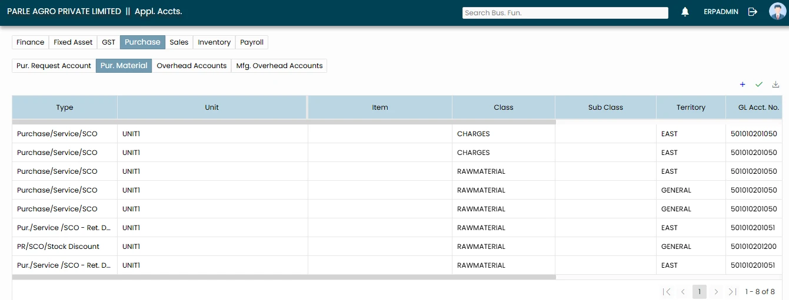
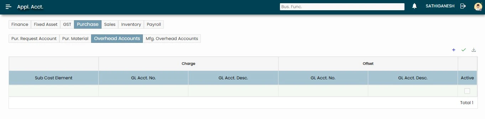

<div data-category="Financials" data-title="Application Journal Accounts – Appl. Acct. (Purchase)" data-updated="December 01, 2025" data-contributors="RoadmapIT" data-breadcrumb="Home,Financials,Application Journal Accounts – Appl. Acct. (purchase)">
  <div class="page-content">
    <p>This screen is used to define Application journal Accounts for Appl. Acct. (Purchase).</p>
    <h5>Navigation path:</h5>
    <p class="fs-6">Financials \ Setup \ CPC/GL account \ appl.accts(pur).</p>
    <h2>Pur. (Material)</h2>
    
    <ul style="list-style-type: none; align-content: center">
      <li class="mouse-icon">
        Click
        <i class="bi bi-plus fs-4 mx-2 text-primary"></i>
        to add.
      </li>
      <li class="mouse-icon">Select the Type.</li>
      <li class="mouse-icon">Enter/Select the Trans.Unit.</li>
      <li class="mouse-icon">Select theItem either Class or Sub Class ,Territory.</li>
      <li class="mouse-icon">Select the account and tax Classification.</li>
      <li class="mouse-icon">Tax Type is mandatory.</li>
      <li class="mouse-icon">
        Click
        <i class="bi bi-check-lg fs-4 mx-2 text-success"></i>
        to save.
      </li>
    </ul>
    <h2>Overhead Accounts</h2>
    
    <ul style="list-style-type: none; align-content: center">
      <li class="mouse-icon">
        Click
        <i class="bi bi-plus fs-4 mx-2 text-primary"></i>
        to add.
      </li>
      <li class="mouse-icon">Select sub cost Element in LOV.</li>
      <li class="mouse-icon">Charge - Account Need to select in LOV.</li>
      <li class="mouse-icon">Offset - select Account from the LOV.</li>
      <li class="mouse-icon">
        Click
        <i class="bi bi-check-lg fs-4 mx-2 text-success"></i>
        to save.
      </li>
    </ul>
  </div>
</div>
